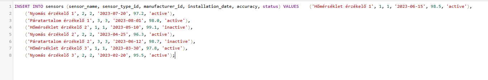
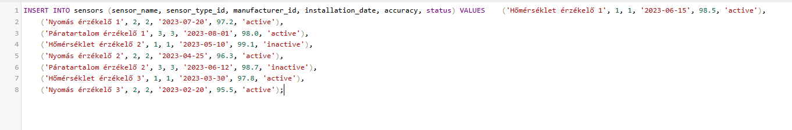
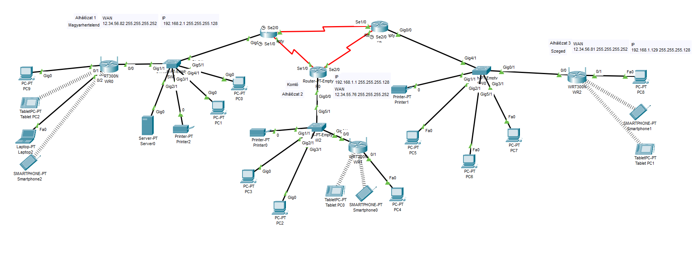

12. Osztály - 1. Félév
-

 

Adatbázis kezelés alapjai - Egy minőség ellenőrzés adatbázisa látható a mérések adataival feltöltve
Önreflexió
- Adatbázisok alapvető működésének megértése
- SQL-lekérdezések alkalmazása adatok keresésére, rendszerezésére és módosítására
- Strukturált és pontos adatkezelés
-

Hálózat kezelés - Nagyvállalat 3 alhálózattal, 3 telephelyen
Önreflexió
- IP-címzés és alhálózatok kezelése
- Routerek és switchek konfigurálása